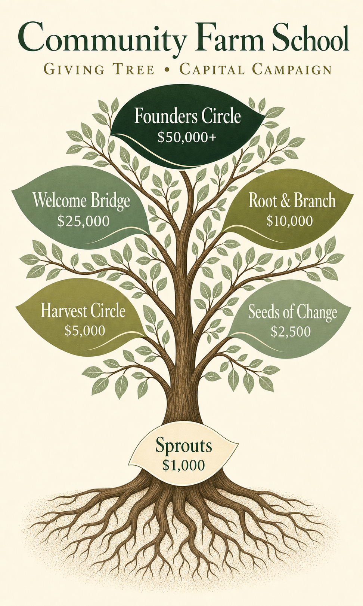

Find your place on the tree
Every gift takes root in our giving tree.
From roots to crown — six leaf-labeled levels of giving, from Sprouts at $1,000 to Founders Circle at $50,000 and above. For visionary gifts of $100,000 or more, please be in touch with Jenna directly.

Share · Print · Mail
Take this with you.
Download a one-page donor leave-behind — the full giving tree with all six levels, ready to print, share with family, or send to a foundation.
1 page · US Letter · print-ready
Every level, in detail.
Six leaf-labeled levels grow on the tree, plus two Visionary tiers for founding gifts. Every level shapes a different part of the school.
Visionary Naming Gift
$250,000+
A single founding family or foundation can lend their name to the school, the market, or a permanent scholarship endowment. Includes one private event per year at the market, for the life of the school. Available by direct conversation with Jenna.
Legacy Partner
$100,000+
Lead naming on a yurt classroom or the welcome bridge; permanent plaque inside the market; one private event per year for ten years. Available by direct conversation with Jenna.
Founders Circle
$50,000+
The deep-forest leaf at the top of the tree. Co-naming on a major feature of the property — the greenhouse, a yurt classroom, or the natural playground. Engraved listing on the donor wall. One private event per year for five years.
Welcome Bridge
$25,000
A strong, sage-green leaf on the upper canopy. Named plank on the welcome bridge or another signature element; engraved listing on the donor wall; one private event per year for three years.
Root & Branch
$10,000
An olive leaf on the upper canopy. Funds a full scholarship or a major piece of farm infrastructure. Engraved plank on the welcome bridge; listed in the donor wall and the annual report.
Harvest Circle
$5,000
A muted moss-green leaf at the heart of the canopy. Supports a full season of materials and tools for one classroom; listed on the donor wall and the giving-tree mural inside the market.
Seeds of Change
$2,500
A pale-sage leaf opposite Harvest Circle. Provides partial scholarship support for a family in need; listed on the giving-tree mural and in the donor program.
Sprouts
$1,000
The cream leaf at the base of the tree, just above the roots. Sponsors outdoor gear and classroom materials for one semester; listed on the giving-tree mural. The starting place for many families.
How the tree grows.
The giving tree is more than a giving menu — it is a living mural. A large, hand-painted version of this tree will be installed inside the market barn at 201 Bedford Road. Every gift, at every level, will be inscribed somewhere on the tree:
- ·Sprouts are inscribed on the base leaf and the roots, the foundation that holds everything up.
- ·Seeds of Change and Harvest Circle donors share the two middle leaves — the heart of the canopy.
- ·Welcome Bridge and Root & Branch donors take the upper-left and upper-right leaves, where the canopy opens to the sky.
- ·Founders Circle is named in the deep-green crown leaf at the top — the highest visible recognition on the tree.
- ·Visionary gifts of $100,000 and above are recognized separately, with naming opportunities on the school, the market, or an endowed scholarship fund.
Children at the school will help paint and tend their portion of the tree each year. By the time the first cohort graduates, the tree will hold every name that helped make the school possible.
Ready to plant yourself?
Choose your leaf above, then visit our giving page to make a tax-deductible gift. For Visionary gifts of $100,000 or more, please reach out to Jenna directly.